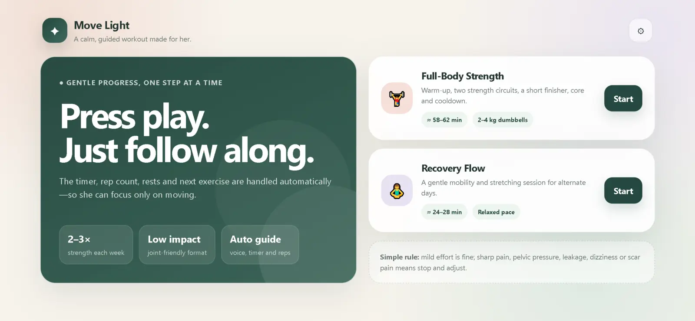

Selected work / Case study
Move Light — a guided workout experience
A client wanted strength training and recovery sessions on alternate days that she could start any time, shaped around her body and level. I designed an experience that does the counting for her so she can focus on moving.
- Role
- UX designer and product owner for a freelance client
- Build
- AI-assisted: I directed Claude and Codex with prompts and iterated; AI-generated implementation
- Tools
- Claude, Codex, Netlify
- Status
- Live. The client is happy for it to be shown.
Starting with her
I began with a detailed conversation about her goals, her current level and what she needed to avoid. That shaped four rules I held to throughout:
- Calm over stimulating: no clutter, no streaks, no loud colours.
- The app counts, times and speaks, so she never has to look at a watch.
- Forgiving of pace: a missed count should never cause panic.
- Nothing extra: every screen has one clear next step.
Key decisions
- “Press play. Just follow along.” The timer, rep count, rests and next exercise are handled automatically.
- Slow, three-second rep counting with +/− buttons, so if she falls behind she can correct the count without stopping.
- Settings for voice prompts, rep counting and sound cues, each on or off, so she controls how much the app speaks.
- Short form demos inside the app, so she does not leave to search for videos.
- A visible plan: “Step 7 of 68, about 58–62 min” and a Today’s flow list so she always knows where she is.
- A plain safety rule on the home screen, and gentle wording such as “Tap if moving at your own pace”.




How I built it
I wrote the brief, the screen behaviours and the copy, then used Claude and Codex through repeated prompts until the pacing, wording and controls felt right, and deployed it on Netlify. The design decisions are mine, and The implementation used AI-generated code.
Reflection & next steps
- Add a clear “not medical advice, follow your clinician’s guidance” note.
- Add a simple history of completed sessions, only if it stays calm.
- Check text size and contrast against accessibility guidelines.
- Review it with her after a few weeks and write down what she changes or ignores.